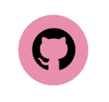

Olá, eu sou a <Mirelly>
Estudante de Tecnologia da informação e gosto de transformar ideias em códigos e experiencias digitais. Atualmente, estou cursando Desenvolvimento Web para ampliar meus conhecimentos visando criar projetos criativos e funcionais.
